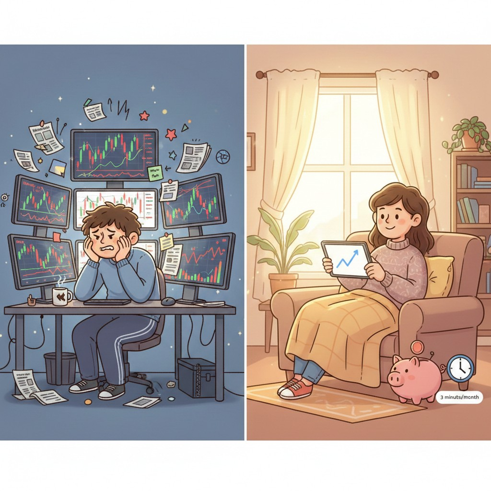

6 נקודות שחשוב לחשוב עליהן לפני שאנחנו מתחילים להשקיע
לפעמים השקעות זה נראה מפחיד ולא ברור, וכמות המידע שיש ברשת על השקעות יכולה לגרום לנו לפחד מזה או לתת לנו תחושת פומו מטורפת. רשמתי כמה נקודות קצרות שלדעתי חשוב לדעת לפני שנכנסים לשוק ההון:
1. אתם כנראה לא חכמים יותר מהשוק
הרבה אנשים שמדברים על הזדמנות חד פעמית מרגישים שהם יודעים משהו מיוחד. אבל בואו נהיה ריאליים: המידע פתוח לכולם. מולכם עומדות מערכות ואלגוריתמים שמעבדים נתונים בשבריר שנייה. כשאנחנו חיים את היומיום שלנו, אנחנו חייבים להבין שכל מידע שמגיע אלינו כבר מגולם במחיר של המניה.
2. הפעם זה שונה
בכל משבר יש תחושה שהפעם זה באמת הסוף. התקשורת מבהילה והפחד משתלט, אבל ההיסטוריה מלמדת שהשוק יודע לצאת ממשברים פעם אחר פעם. הנרטיב אולי משתנה אבל הסיפור נשאר אותו סיפור, ודווקא אחרי המשבר מגיעות בדרך כלל התשואות הגבוהות ביותר.
3. התקשורת רוצה רייטינג
התקשורת משיגה רייטינג מפחד, והפחד הזה גורם לכם למכור בפאניקה. וזה הדבר הכי גרוע שאפשר לעשות לתיק שלכם. למה? כי אתם לא מפסידים עד שאתם מוכרים. אם תמכרו כשהשוק במשבר, אתם גם מקבעים את ההפסד וגם מפספסים את הצמיחה שבאה מיד אחר כך.
4. זמן בשוק מנצח את תזמון השוק
אף אחד לא באמת יודע מתי תגיע הקפיצה ומתי ההתרסקות. המון מחקרים מראים שפספוס של 10 הימים הכי טובים בשוק על פני עשרות שנים יכול לגרום לתשואה שלכם להיחתך כמעט בחצי. הנתונים על מדד ה-S&P 500 לאורך 20 שנה מראים שמי שנשאר מושקע השיג כ-9.8% בשנה, בזמן שמי שפספס רק את עשרת הימים האלו צנח לכ-5.3%. פשוט לשבת בשקט זו לעיתים הפעולה הכי רווחית שיש.
5. תיק מדהים לא יציל תכנון גרוע
אתם יכולים לבנות תיק השקעות מדהים, אבל אם לא עשיתם תכנון פיננסי מקיף, לא בניתם קרן חירום ולא הבנתם לאן הכסף שלכם הולך, מקרה לא צפוי אחד יכול להרוס את כל מה שבניתם.
6. למה לדעתי השקעה במדדים רחבים מתאימה לרוב מוחלט של האנשים
רובנו לא אוהבים לעקוב אחרי גרפים ולקרוא ולנתח דוחות של חברות, לכל אחד יש עיסוקים ומקצוע אחר וזה בסדר גמור. אבל אם אנחנו מבינים את החשיבות של השקעה מול שחיקת האינפלציה ואת אפשרויות הצמיחה המדהימות שיש בטווח הארוך, אנחנו מגלים שלמידה של כמה שעות תאפשר לנו להשקיע בצורה שלא דורשת יותר משלוש דקות בחודש. בניגוד להיגיון, דווקא מי שמשקיע פחות מאמץ, פועל בצורה אוטומטית ולא מסתכל על התיק כל היום, הוא זה שינצח את רוב המשקיעים האקטיביים.
בסופו של דבר המטרה אמורה להיות לנצח את הפחד ולהתחיל. ההבנה של כמה נקודות פשוטות יכולה לתת לנו ביטחון ושקט נפשי. יש עוד הרבה נקודות שאפשר ללמוד עליהן ברשת וגם אני ארשום עליהן בעתיד.
תודה רבה שקראתם!
הכתוב אינו מהווה ייעוץ השקעות או תחליף לייעוץ כזה.